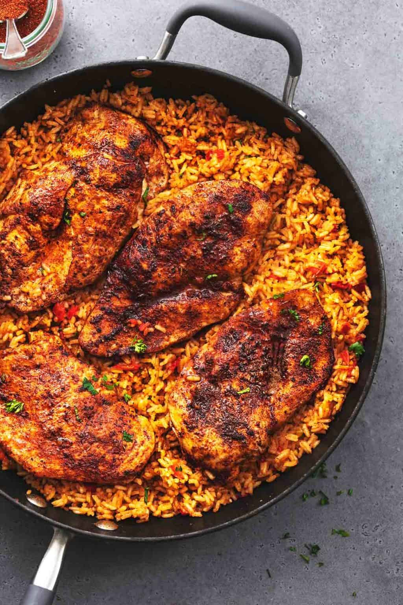

Harry's Cajun Chicken & Rice

Cajun style rice and chicken
This quick and easy to make Cajun styled rice and chicken is sure to be a hit with the family. Heavily spiced for a flavourful heat that packs and punch and remains healthy.
Shopping List
- Chicken Breast: 500g
- Uncooked Rice: 200g
- Tomatoe Puree: 1Tbsp
- Tomatoes: 2
- White Onions: 1
- Corriander: 1 Handfull
- Pepper: 1, Any Colour
- Cajun Spice Mix: 2Tbsp
The Recipe
- Butterfly your Chicken Breast so it is cut in half but still attached at one edge, cover with 1Tbsp of the Cajun Spice Mix.
- Peel your White Onion, dice as finely as you'd like, do the same for both your Tomatoes. Put them aside in a bowl and add a generous pinch of salt.
- Separate the leaves from the stem as best as you can for the Corriander, discard the stem and chop the leaves, add this alongside the juice of a lime to the vegetable bowl
- Chop your Pepper into any size you'd like, add this to the vegetable bowl and give it a good mix.
- Wash your Uncooked Rice and fill it with 400ml of cold water, add the contents of the vegetable bowl, the Tomato Puree and the remaining 1Tbsp of Cajun Spice Mix
- Cook the Chicken Breast at 180c in an airfryer for 15 minutes, ensure temp is 70c+ before taking it out
- Boil the Uncooked Rice, once water is boiler drop to a simmer for 10 minutes, then take off heat completely and allow to rest with the lid on for a further 10 minutes
- Serve, fluff the rice and and give it a good mix. Add to a bowl and place the cooked chicken atop it. Garnish with chilli flakes, corriander, salt etc.
Tips!
A lot of cooking is in the way something is cooked, below are some tips I've found out through my time cooking this dish!
- Do not take the lid off the rice at all during cooking! Trust the process, the water may look like it's gone, but it's not.
- You can add Jalepenos for more of a kick if you'd like
- Sour cream is an optional, but welcome addition
- Chop the chicken up into fine pieces, mix with the rice and add some refried beans. Finally wrap in a tortilla for an unreal burrito!
Home